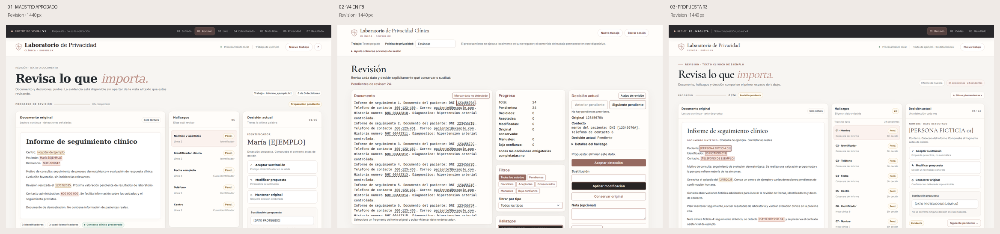
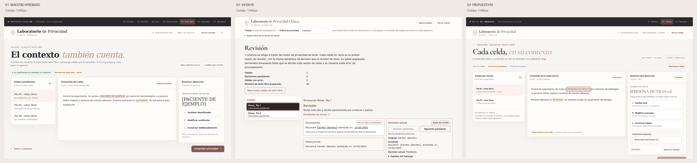
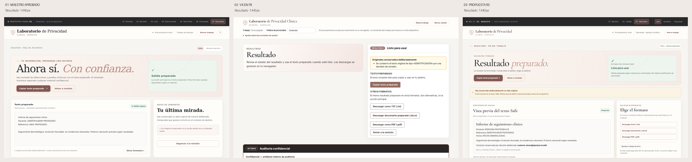
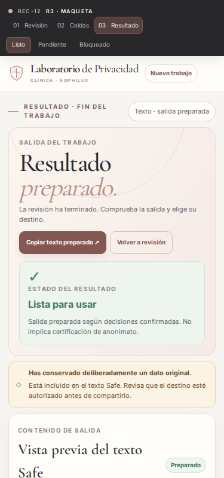
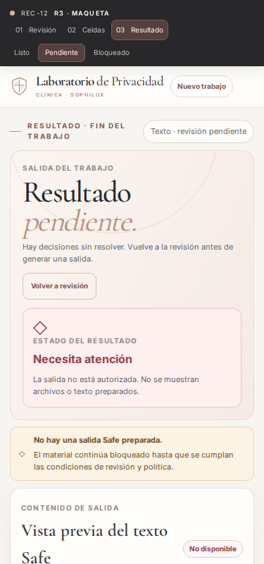
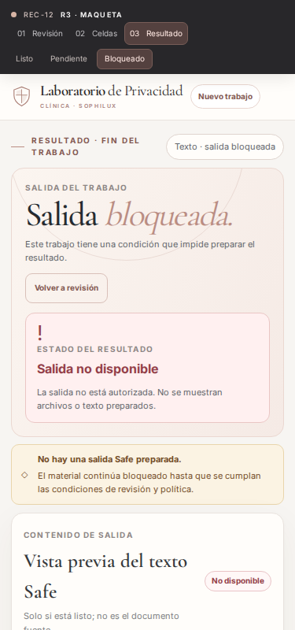

Pendiente de aprobación humana. Este documento no indica que la interfaz React se haya modificado. El contrato congelado sigue intacto; se han utilizado datos exclusivamente ficticios. Las capturas son estados comparables por tipo y viewport, no una equivalencia de contenido literal (el maestro V1 usa pocos ejemplos y V4/R3 usan densidad realista).
01. Revisión
Documento prominente + Hallazgos en primera pantalla + inspector contextual. Progreso y filtros permanecen como controles secundarios. Densidad R3: 24 detecciones sin aceptación automática.

Escritorio · 1440 × 900


Móvil · 375 × 800

02. Texto libre en celdas
La celda activa, su contenido y la decisión vuelven a ser el centro. Se conserva la cola real y el contexto de reprocesamiento, pero no se obliga a leer una explicación extensa antes de actuar. Dos celdas, cuatro detecciones.

Escritorio · 1440 × 900


Móvil · 375 × 800

03. Resultado
Estado + acción contextual + advertencia de original conservado + vista previa del Safe preparado, con Auditoría confidencial separada. Si el estado es Pendiente o Bloqueado no se crea vista previa ni se presenta una salida disponible.
Escritorio · 1440 × 900 · Estado Listo


Móvil · 375 × 800 · Estado Listo

Otros estados: Pendiente y Bloqueado






La maqueta reproduce tokens y componentes de Sophilux B V1. Las imágenes de referencia y F8 proceden del repositorio y se incorporan solamente a estas láminas para facilitar su revisión. No hay cambio de producto ni datos clínicos reales.